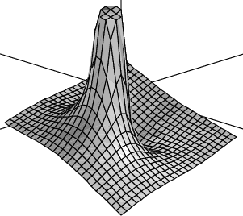

10.8 Drawing Complex Functions¶
Here is another way to graph a complex function of complex arguments. For each complex value z, compute f(z), again expressing the value in polar coordinates . We draw the complex valued function, again considering the (x,y)-plane as the complex plane, using r as the height (or z-coordinate) and θ as the color. This is a standard plot—we learned how to do this in Chapter ugGraph — but here we write a new program to illustrate the creation of polygon meshes, or grids.
Call this function drawComplex. It displays the points using the mesh of points. The function definition is in three parts.
drawComplex: (C -> C, S, S) -> VIEW3D
drawComplex(f, realRange, imagRange) == The first part
delReal := (hi(realRange)-lo(realRange))/realSteps The real step size
delImag := (hi(imagRange)-lo(imagRange))/imagSteps The imaginary step size
- Initial list of list of points $llp$
- llp:List List Point DFLOAT := []
Variables delReal and delImag give the step sizes along the real and imaginary directions as computed by the values of the global variables realSteps and imagSteps. The mesh is represented by a list of lists of points llp, initially empty. Now [] alone is ambiguous, so to set this initial value you have to tell FriCAS what type of empty list it is. Next comes the loop which builds llp.
- real := lo(realRange) The initial real value
- for i in 1..realSteps+1 repeat Begin real iteration
imag := lo(imagRange) initial imaginary value
lp := []$(List Point DFLOAT) initial list of points $lp$
for j in 1..imagSteps+1 repeat Begin imaginary iteration
- z := f complex(real,imag) value of $f$ at the point
- pt := point [real,imag, clipFun sqrt norm z, Create a point argument z]
lp := cons(pt,lp) Add the point to $lp$
- imag := imag + delImag The next imaginary value
- real := real + delReal The next real value llp := cons(lp, llp) Add $lp$ to $llp$
The code consists of both an inner and outer loop. Each pass through the inner loop adds one list lp of points to the list of lists of points llp. The elements of lp are collected in reverse order.
makeViewport3D(mesh(llp), “Complex Function”) Create a mesh and display
The operation mesh then creates an object of type ThreeSpace(DoubleFloat) from the list of lists of points. This is then passed to makeViewport3D to display the image.
Now add this function directly to your vectors.input file and re-read the file using read vectors. We try drawComplex using a user-defined function f.
Read the file.
)read vectors
This one has a pole at z=0.
f(z) == exp(1/z)
Draw it with an odd number of steps to avoid the pole.
drawComplex(f,-2..2,-2..2)
